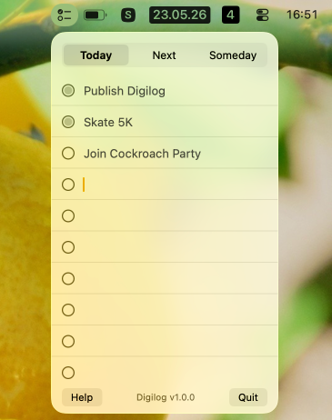

A minimal macOS menu bar task list, inspired by Ugmonk Analog.

.Three tabs — Today, Next,
Someday — each with 10 fixed rows. State lives as plain
markdown files in ~/Documents/Digilog/.
Click the checklist icon in the menu bar. Type into any row, check off items as you go. That’s it.
Files are written to ~/Documents/Digilog/ as you
type:
~/Documents/Digilog/
├── 2026-05-22.md # Today, keyed by logical date (now − 4h)
├── NEXT.md
└── SOMEDAY.mdYou can edit those files in any text editor — changes show up next time you open the popover.
You can double click on “Next/Someday” to change to a new card. Today is limited to just 10 items, but once you run out of space on Next/Someday card, you can get a new one. The older cards are preserved in the NEXT.md file, but moved below.
The code is fairly minimal (250 lines of Swift) and written using Claude Opus 4.7. I don’t think code generated by LLMs should be copyright-able. Hence, this is explicitly marked as Unlicense.